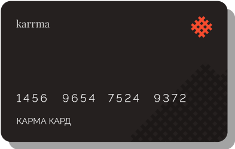

Исправьте свою кредитную историю
Оформите корректирующий кредит

Оформите корректирующий кредит
Вы вносите гарантийное обеспечение в размере, равном сумме корректирующего кредита
Наш партнер-кредитор без лишних проверок и вопросов выдает вам кредит под наше поручительство
Вы своевременно вносите очередные платежи, о чем кредитор сообщает в бюро кредитных историй
Ваша кредитная история улучшается. После полного погашения мы возвращаем гарантийное обеспечение
Более эффективное построение кредитной истории при помощи корректирующуй кредитной карты. Кредитный лимит равен сумме гарантийного обеспечения. Чем чаще вы вносите своевременные платежи, тем лучше Ваша кредитная история.
Наличие просроченных платежей хотя бы у одного кредитора, может повлечь за собой отказ в предоставлении займов у других, что в свою очередь может еще более усугубить ситуацию, т.к. информация об отказах также попадает в бюро кредитных историй и негативно влияет на кредитный рейтинг.
Кроме того, становятся нередки случаи отказов в страховании, в сдаче квартир, и даже в приеме на работу лиц, имеющих запятнанную финансовую репутацию.
Таким образом, кредитная история становится важнейшим показателем Вашей благонадежности и влияет не только на возможность получения кредитов, но и на другие стороны вашей жизни.
Как правило, банки и МФО хотят видеть в числе своих клиентов заемщиков «со стажем» — тех у кого уже есть положительная кредитная история. Так как же ее построить, если кредит никто не одобряет? Одним из наиболее доступных вариантов может стать корректирующий кредит. Начните кредитную историю сегодня вместе с karrma
В настоящий момент мы предлагаем три типа корректирующих кредитов
* Без учета %, начисляемого кредитором по договору займа - 0.33% в день
Мы настолько уверены в karrma, что готовы вернуть потраченные вами средства в случае, если Ваша кредитная история не улучшится через 180 дней, при условии что вы не будете допускать просрочки по платежам, как у нашего партнера-кредитора, так и любых других кредиторов.
*Возвращается комиссия сервиса karmakard. Проценты по займу, начисленные кредитором, а также комиссии платежных систем возврату не подлежат.
Согласно нашей статистике, первые улучшения кредитной истории происходят уже после второго платежа по корректирующему кредиту. Так почему же не приступить к исправлению кредитной истории сегодня?